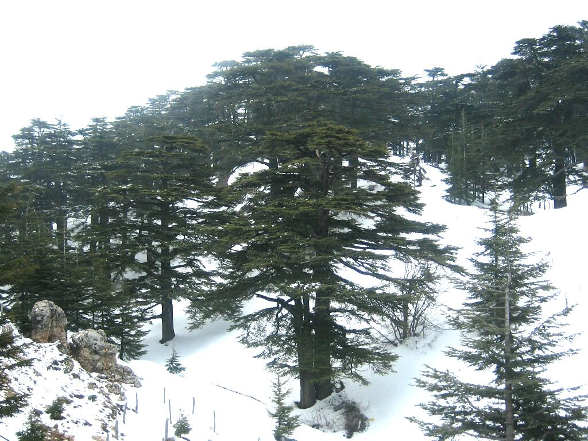
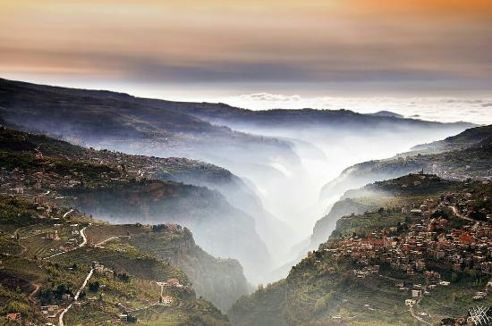
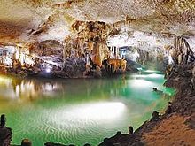
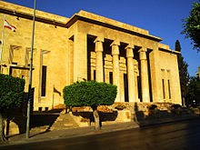

Lebanon is a tiny country in the Middle East that borders Syria and Israel. People first built villages in Lebanon
more than 7000 years ago. The captial of Lebanon is Beirut, an estimated 3,779,000 people live in Lebanon
and most people there speak Arabic, French, English and Armenian. For more information on the history of
Lebanon,
click here.
Tourist Spots
There are many places to visit in Lebanon but the main destinations tourists visit are:

The Cedars
- Known as the pride and symbol of the Lebanese heritage, the Cedars is a series of extensive forests located
in the snowy mountains

Kadisha Valley
- sometimes called the Holy Valley due to it's extreme religious significance. It has sheltered Christian
monastic groups for millennia and is of ancient traditional importance to the christians still living there.

Jeita Grotto
- this destination is an interconnected cave system formed from breathtaking limestone formations over thousands
of years. Tourists take up guided mini-boat tours through the natural river to reach the majestic entrance of the caves.

National Museum of Beriut
- a paramount museum preserving the archaeology and paleontology of ancient Lebanon. It was designed in a french
inspired style and was officaly opened to tourists in 1942. So, this destination is for anyone who likes to know about the
history of countries.
For more information on this destination on all these destinations,
click here.
Cuisines
Description
Baba Ghanoush
If you like hummus, baba ghanoush is a must-try. It's a dip that's served with pita bread and drizzled with
olive oil. It tastes very similar to hummus because it's made with tahini. Main difference is that baba ghanoush
is made from eggplant instead of chickpeas and sometimes pomegranate.
Manakeesh
Manakeesh is like a lebanese pizza. It can be made with meat, cheese, zaatar (which is a strain of thyme), or
kishik (a cracked wheat paste). Manakeesh is typically served with tomatoes, cucumbers, fresh mint leaves and olives.
Falafel
Falafel is made from crushed chickpeas that are deep fried. It's served in a pita sandwich with vegetables and
tahini sauce. (the same sauce they put in hummus and baba ghanoush)